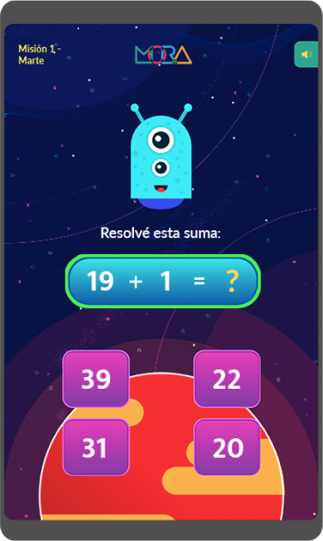
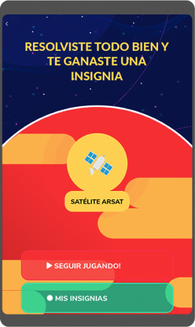
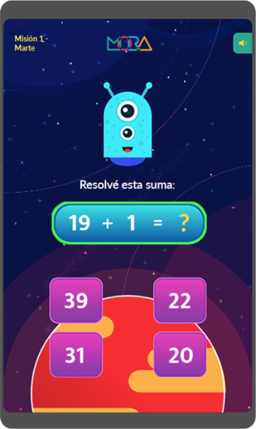
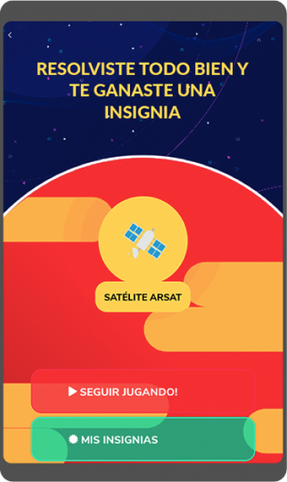

Proyectos
Mision
Aurora es un proyecto a través del cual buscamos hacer algo extraordinario: lanzar un globo a la estratósfera
La misión es enviar una carga al espacio, a una altura entre los 20 y 40 km, utilizando un globo meteorológico. Los componentes de la carga nos van a permitir tomar imágenes de alta calidad de la curvatura de la tierra y de la zona del lanzamiento a distintas alturas. También vamos a medir temperatura, humedad y presión a lo largo de todo el recorrido.
Para este proyecto trabajamos con
Juan Manuel Garrido (El Gato y la Caja)
https://elgatoylacaja.com/Andrés Rieznik, Valeria Edelstein, Leonardo Más
(Equipo pedagógico)
 



La misión es enviar una carga al espacio, a una altura entre los 20 y 40 km, utilizando un globo meteorológico. Los componentes de la carga nos van a permitir tomar imágenes de alta calidad de la curvatura de la tierra y de la zona del lanzamiento a distintas alturas. También vamos a medir temperatura, humedad y presión a lo largo de todo el recorrido.
Se filmó todo, mirá los videos!